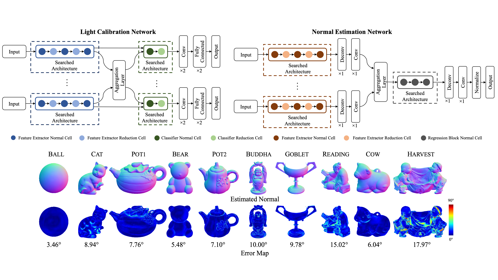
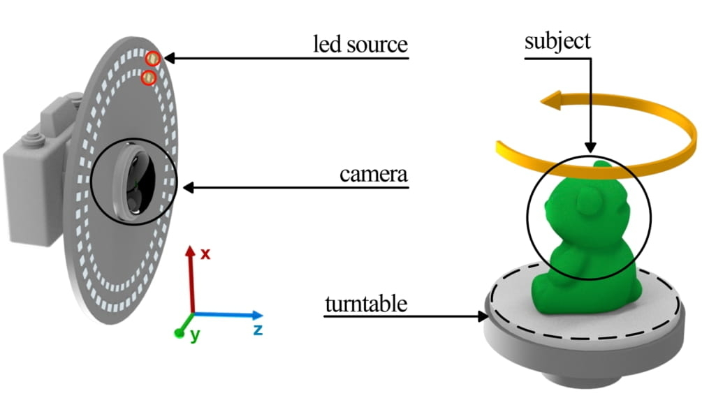
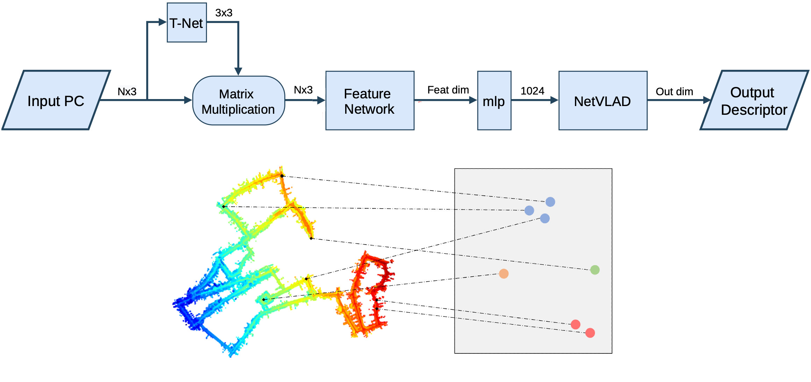

Computer Vision and AI R&D Engineer
July 2025 - Current
Leading the R&D department for computer vision, with a focus on deep learning for human bones 3D reconstruction from X-rays, synthetic data generation, and X-ray calibration pipelines.
Computer Vision and AI R&D Engineer
Computer Vision and AI R&D Engineer
I'm a computer vision and robotics research engineer currently working at X23D AG in Zurich and contributing to applied computer vision projects through ETH Juniors.
My work focuses on applying cutting-edge computer vision and deep learning techniques to challenging real-world problems.
I earned my Master's degree in Robotics, Systems and Control from ETH Zurich in 2021, following a Bachelor's degree in Automation Engineering from Politecnico di Milano in 2018.
My primary research interests include computer vision, 3D vision, AutoML, deep learning, and reinforcement learning.
CV last updated in May 2026.
Selected industry and research roles spanning computer vision engineering, applied AI research, and production-focused prototyping.
July 2025 - Current
Leading the R&D department for computer vision, with a focus on deep learning for human bones 3D reconstruction from X-rays, synthetic data generation, and X-ray calibration pipelines.
Jan 2026 - Current
Developed a computer vision proof of concept for smoke detection, including dataset creation and camera integration to support reliable deployment.
Feb 2023 - Aug 2025
I currently apply Computer Vision and Deep Reinforcement Learning to the disassembly of electric car batteries.
Mar 2025 - Dec 2025
Developed a proof of concept using LLMs and OCR for document understanding.
Aug 2024 - Feb 2025
Developed a proof of concept for damage detection and classification on reflective surfaces.
May 2024 - Current
Developed a proof of concept for 3D indoor scene synthesis using NVIDIA Omniverse and LLMs.
Sep 2023 - Feb 2024
Gold bars fraud detection: application of deep learning computer vision approaches for feature detection and matching.
Mar 2022 - Mar 2023
I worked on multiple computer vision and 3D vision problems under the supervision of Prof. Dr. Pascal Fua.
Aug 2021 - Dec 2021
I had the opportunity to work with real world data aiming to achieve sparse 3D reconstruction of cars after accidents.
May 2021 - Dec 2021
I worked on surface normals estimation and view synthesis (NeRF-based) problems under the supervision of Prof. Dr. Luc Van Gool and Dr. Suryansh Kumar.
Feb 2020 - Dec 2020
Intern role in the Fire Control and Simulation division where I worked on improving accuracy evaluation end visualization of aerial weapons.
Peer-reviewed work focused on photometric stereo, neural radiance fields, and efficient vision architectures.

Francesco Sarno, Suryansh Kumar, Berk Kaya, Zhiwu Huang, Vittorio Ferrari, Luc Van Gool, Computer Vision Lab, ETH Zurich, Google Research, KU Leuven.

Berk Kaya, Suryansh Kumar, Francesco Sarno, Vittorio Ferrari, Luc Van Gool, Computer Vision Lab, ETH Zurich, Google Research, KU Leuven.
Recognition for research communication and applied innovation in computer vision and robotics.

Francesco Sarno, Jesse Isoaho, Özhan Özen, Raphael Rätz, Gabriel Hidalgo, Christian Ochsenbein
A selection of practical projects at the intersection of perception, mapping, and intelligent systems.

Francesco Sarno, Pietro Griffa, Alberto Dall'Olio, Alexander Hatteland.
Community involvement centered on mentoring, technical collaboration, and student initiatives.
October 2021 - October 2022
Core Team Member role in the GDSC Zurich community.
Feel free to get in touch for research collaborations, consulting opportunities, or technical discussions.